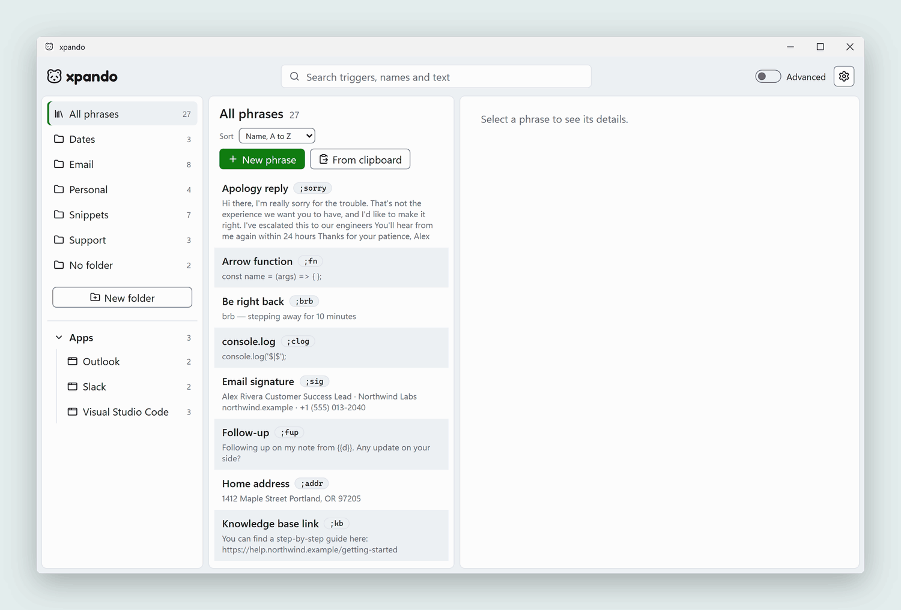

Find any phrase in a keystroke
Search looks through triggers, names and the text itself as you type, so you can find a phrase even when you can't remember its trigger.
- Live results, no Enter key needed
- Advanced mode adds operators such as
folder:workorbody:"kind regards"
